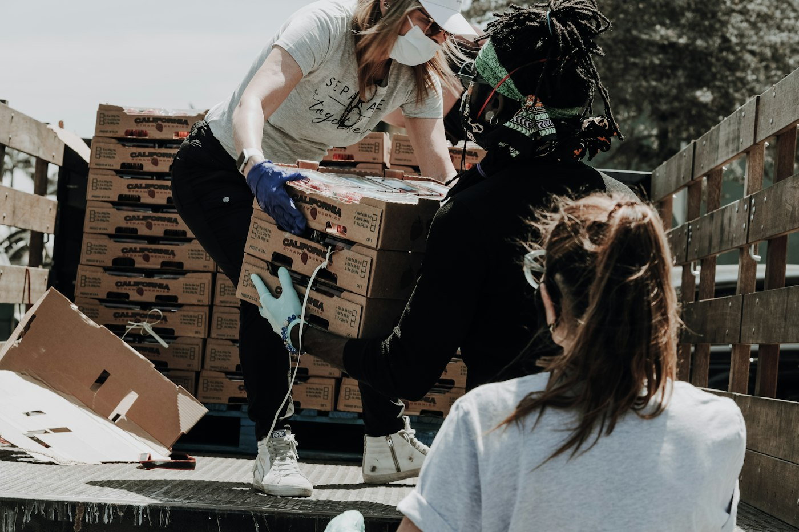

Community resource research
Identify, categorize, and verify food, shelter, clothing, and other resources.
Volunteer with Aid Room
Help make complicated systems easier to navigate. Bring your experience, curiosity, and care to work that strengthens our community.

A place for your skills
Volunteers support outreach, resource development, administrative projects, community events, and other activities that strengthen our ability to serve. Opportunities depend on current needs, supervision, and role requirements.
Ways to get involved
Identify, categorize, and verify food, shelter, clothing, and other resources.
Create clear digital and printed resource guides.
Support outreach and distribute Resource Connection cards.
Help with data entry, organization, projects, and coordination.
Help people understand eligibility and applications for Medicaid, SNAP, and disability benefits.
Bring lived experience and respectful support to peer-led recovery work.
Research opportunities, prepare proposals, and support grants and donor relationships. View the grant volunteer opportunity.
Support event logistics, fundraising ideas, and community awareness.
Contribute design, storytelling, and content.
Help maintain platforms, software, and digital tools.
Share specialized experience to support strategy and operations.
Offer flexible help based on current organizational needs.
Care in every interaction
Respect, reliability, and thoughtful boundaries make our work possible.
Joining the team
Email your interests, experience, and availability.
We review applications, interview selected applicants, and complete any role-related screening.
Complete orientation and agree on responsibilities and a schedule.
An application does not guarantee placement. Assignments depend on organizational needs, qualifications, safety requirements, and policies.